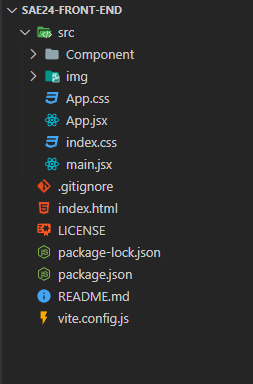

Modifier un composant
Structuration du projet
L'arborésance du projet est structuré comme ceci

Vous trouverez dans le dossier component les différents composant réact qui compose se projet
Composant React
La façon la plus simple de définir un composant est d'écrire une fonction JavaScript
Un composant est une fonction Javascript qui retourne du HTML